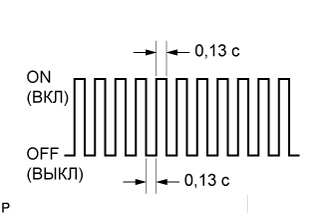

СИСТЕМА АВТОМАТИЧЕСКОЙ ТРАНСМИССИИ (для моделей с двигателем 1GR-FE) > ПРОВЕДЕНИЕ АКТИВНОЙ ДИАГНОСТИКИ |
| DESCRIPTION |
Check mode has a higher sensitivity to malfunctions and can detect malfunctions that normal mode cannot detect. Check mode can also detect all the malfunctions that normal mode can detect. In check mode, DTCs are detected with 1 trip detection logic.
| ПОРЯДОК ПРОВЕДЕНИЯ АКТИВНОЙ ДИАГНОСТИКИ |
Make sure that the following conditions below are met:
Battery positive voltage 11 V or more
Throttle valve fully closed
Transaxle in the P or N position
A/C OFF
Turn the ignition switch OFF.
Connect the intelligent tester to the DLC3.
Turn the ignition switch ON and turn the tester ON.
Enter the following menus: Powertrain / Engine and ECT / Utility / Check Mode.
|  |
Change the ECM to check mode. Make sure the MIL flashes as shown in the illustration.
Start the engine. The MIL should turn off after the engine starts.
Perform "MONITOR DRIVE PATTERN" for the ECT test (See page Нажмите здесь).
(Or, simulate the conditions of the malfunction described by the customer.)
After simulating the malfunction conditions, use the tester to check the DTC and freeze frame data.